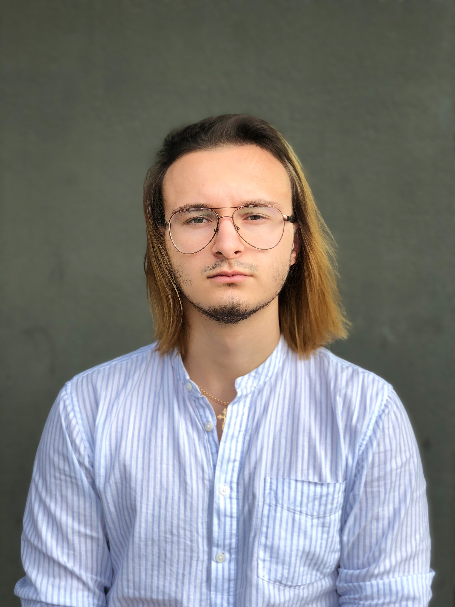

Ja a moj zivot
Ahojte, ako ste si všimli, som Denys. Som obyčajný ukrajinský študent, ktorý došiel študovať informatiku na FEI STU. Vybral som si túto školu kvôli tomu, že je najlepšia univerzita na Slovensku.
Keby ste nevedelí STU ponúka technické vzdelávanie a zapája študentov do výskumu v oblasti strojárenstva, elektrotechniky, počítačových vied, stavebníctva, architektúry, chémie, potravinárstva a materiálových technológií. Podľa slovenského hodnotenia fakúlt agentúrou ARRA je dlhodobo najlepšou slovenskou univerzitou pre chemické technológie (FCHPT 1. miesto medzi fakultami zameranými na chémiu), počítačové a technické vedy (FEI dlhodobo na 3. mieste medzi fakultami zameranými na technické vedy).
Nastúpil som na školu v roku 2017, a už ju skoro absolvujem. Mal som strašne veľa ťažkostí ale zvladam to aj do dnes. Pre študium na STU som potreboval ziskať ďalšie skuseností:
- Sútredenie
- Šikovnosť
- Starostlivosť
Celý život ma bavilo programovanie a preto som išiel študovať na odbor aplikovaná informatika. Je to najlepší odbor pre tákych ako aj ja.
Na Fakulte informatiky PEVŠ s ohľadom na požiadavky doby cielene pripravuju sa študentí na profesionálne pôsobenie v oblasti informačných technológií. Kladieme dôraz na výchovu profesionála, ktorý zvláda nadštandardné požiadavky IT praxe. Naším benefitom je tiež flexibilita štúdia prispôsobená aktuálnym potrebám trhu. Dôležitým aspektom je praktická príprava, ktorá našim absolventom dáva možnosť vyniknúť medzi konkurenciou. Zaručujú ju partnerstvá so spoločnosťami, ktoré zabezpečujú odborné prednášky, či možnosť stáží, ako napríklad IBM, Education First, Vis Gravis, Asseco, Gratex international, Goldmann systems a ďalšie.